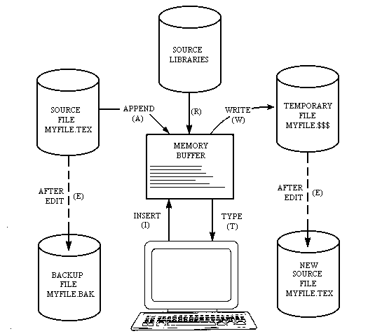
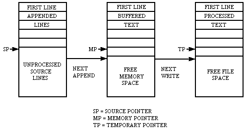
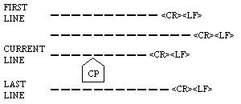

Table of Contents
2.1.1 ED Operation
2.1.2 Text Transfer Functions
2.1.3 Memory Buffer Organization
2.1.4 Line Numbers and ED Start Up
2.1.5 Memory Buffer Operations
2.1.6 Command Strings
2.1.7 Text Search and Alteration
2.1.8 Source Libraries
2.1.9 Repetitive Command Execution
Tables
2-1 ED Text Transfer Commands
2-2 Editing Commands
2-3 Line-editing Controls
2-4 Error Message Symbols
2-5 ED Control Characters
2-6 ED Commands
Figures
2-1 Overall ED Operation
2-2 Memory Buffer Organization
2-3 Logical Organization of the Memory Buffer
ED is the context editor for CP/M, and is used to create and alter CP/M source files. To start ED, type a command of the following form:
ED filename
or
ED filename.typ
Generally, ED reads segments of the source file given by filename or filename.typ into the central memory, where you edit the file and it is subsequently written back to disk after alterations. If the source file does not exist before editing, it is created by ED and initialized to empty. The overall operation of ED is shown in Figure 2-1.
ED operates upon the source file, shown in Figure 2-1 by x.y, and passes all text through a memory buffer where the text can be viewed or altered. The number of lines that can be maintained in the memory buffer varies with the line length, but has a total capacity of about 5000 characters in a 20K CP/M system.
Edited text material is written into a temporary work file under your command. Upon termination of the edit, the memory buffer is written to the temporary file, followed by any remaining (unread) text in the source file. The name of the original file is changed from x.y to x.BAK so that the most recent edited source file can be reclaimed if necessary. See the CP/M commands ERASE and RENAME. The temporary file is then changed from x.$$$ to x.y, which becomes the resulting edited file.

The memory buffer is logically between the source file and working file, as shown in Figure 2-2.

Given that n is an integer value in the range 0 through 65535, several single-letter ED commands transfer lines of text from the source file through the memory buffer to the temporary (and eventually final) file. Single letter commands are shown in upper-case, but can be typed in either upper- or lower-case.
There are a number of special cases to consider. If the integer n is omitted in any ED command where an integer is allowed, then 1 is assumed. Thus, the commands A and W append one line and write one line, respectively. In addition, if a pound sign # is given in the place of n, then the integer 65535 is assumed (the largest value for n that is allowed). Because most source files can be contained entirely in the memory buffer, the command #A is often issued at the beginning of the edit to read the entire source file to memory. Similarly, the command #W writes the entire buffer to the temporary file.
Two special forms of the A and W commands are provided as a convenience. The command OA fills the current memory buffer at least half full, while OW writes lines until the buffer is at least half empty. An error is issued if the memory buffer size is exceeded. You can then enter any command, such as W, that does not increase memory requirements. The remainder of any partial line read during the overflow will be brought into memory on the next successful append.
2.1.3 Memory Buffer Organization
The memory buffer can be considered a sequence of source lines brought in with the A command from a source file. The memory buffer has an imaginary character pointer (CP) that moves throughout the memory buffer under command of the operator.
The memory buffer appears logically as shown in Figure 2-3, where the dashes represent characters of the source line of indefinite length, terminated by carriage return (<cr>) and line-feed (<If>) characters, and CP represents the imaginary character pointer. Note that the CP is always located ahead of the first character of the first line, behind the last character of the last line, or between two characters. The current line CL is the source line that contains the CP.

2.1.4 Line Numbers and ED Start-up
ED produces absolute line number prefixes that are used to reference a line or range of lines. The absolute line number is displayed at the beginning of each line when ED is in insert mode (see the I command in Section 2.1.5). Each line number takes the form
nnnnn:
where nnnnn is an absolute line number in the range of 1 to 65535. If the memory buffer is empty or if the current line is at the end of the memory buffer, nnnnn appears as 5 blanks.
You can reference an absolute line number by preceding any command by a number followed by a colon, in the same format as the line number display. In this case, the ED program moves the current line reference to the absolute line number, if the line exists in the current memory buffer. The line denoted by the absolute line number must be in the memory buffer (see the A command). Thus, the command
345:T
is interpreted as move to absolute 345, and type the line. Absolute line numbers are produced only during the editing process and are not recorded with the file. In particular, the line numbers will change following a deleted or expanded section of text.
You can also reference an absolute line number as a backward or forward distance from the current line by preceding the absolute number by a colon. Thus, the command
:400T
is interpreted as type from the current line number through the line whose absolute number is 400. Combining the two line reference forms, the command
345::400T
is interpreted as move to absolute line 345, then type through absolute line 400. Absolute line references of this sort can precede any of the standard ED commands.
Line numbering is controlled by the V (Verify Line Numbers) command. Line numbering can be turned off by typing the -V command.
If the file to edit does not exist, ED displays the following message:
NEW FILE
To move text into the memory buffer, you must enter an i command before typing input lines and terminate each line with a carriage return. A single CTRL-Z character returns ED to command mode.
When ED begins, the memory buffer is empty. You can either append lines from the source file with the A command, or enter the lines directly from the console with the insert command. The insert command takes the following form:
I
ED then accepts any number of input lines. You must terminate each line with a <cr> (the <If> is supplied automatically). A single CTRL-Z, denoted by an up arrow (T)Z, returns ED to command mode. The CP is positioned after the last character entered. The following sequence:
I<cr>
NOW IS THE<cr>
TIME FOR<cr>
ALL GOOD MEN<cr>
^Z
leaves the memory buffer as
NOW IS THE<cr><lf>
TIME FOR<cr><lf>
ALL GOOD MEN<cr><lf>
Generally, ED accepts command letters in upper- or lower-case. If the command is upper-case, all input values associated with the command are translated to upper-case. If the I command is typed, all input lines are automatically translated internally to upper-case. The lower-case form of the i command is most often used to allow both upper- and lower-case letters to be entered.
Various commands can be issued that control the CP or display source text in the vicinity of the CP. The commands shown below with a preceding n indicate that an optional unsigned value can be specified. When preceded by +-, the command can be unsigned, or have an optional preceding plus or minus sign. As before, the pound sign # is replaced by 65535. If an integer n is optional, but not supplied, then n=1 is assumed. Finally, if a plus sign is optional, but none is specified, then + is assumed.
Any number of commands can be typed contiguously (up to the capacity of the console buffer) and are executed only after you press the <cr>. Table 2-3 summarizes the CP/M console line-editing commands used to control the input command line.
Suppose the memory buffer contains the characters shown in the previous section, with the CP following the last character of the buffer. In the following example, the command strings on the left produce the results shown to the right. Use lower-case command letters to avoid automatic translation of strings to upper-case.
| Command String | Effect |
|---|---|
| B2T<cr> | Move to beginning of the buffer and type two
lines:
NOW IS THE
TIME FOR
The result in the memory buffer is
^NOW IS THE<cr><lf>
TIME FOR<cr><lf>
ALL GOOD MEN<cr><lf>
|
| 5C0T<cr> | Move CP five characters and type the
beginning of the line NOW I. The result in
the memory buffer is
NOW I^S THE<cr><lf>
|
| 2L-T<cr> | Move two lines down and type the previous
line TIME FOR. The result in the memory
buffer is
NOW IS THE<cr><lf>
TIME FOR<cr><lf>
^ALL GOOD MEN<cr><lf>
|
| -L#K<cr> | Move up one line, delete 65535 lines that
follow. The result in the memory buffer is
NOW IS THE<cr><lf>^
|
| I<cr> TIME TO<cr> INSERT<cr> ^Z | Insert two lines of text with automatic
translation to upper-case. The result in the
memory buffer is
NOW IS THE<cr><lf>
TIME TO<cr><lf>
INSERT<cr><lf>^
|
| -2L#T<cr> | Move up two lines and type 65535 lines ahead
of CP NOW IS THE. The result in the memory
buffer is
NOW IS THE<cr><lf>
^TIME TO<cr><lf>
INSERT<cr><lf>
|
| <cr> | Move down one line and type one line INSERT.
The result in the memory buffer is
NOW IS THE<cr><lf>
TIME TO<cr><lf>
^INSERT<cr><lf>
|
2.1.7 Text Search and Alteration
ED has a command that locates strings within the memory buffer. The command takes the form
nFs<cr>
or
nFs^Z
where s represents the string to match, followed by either a <cr> or CTRL-Z, denoted by ^Z. ED starts at the current position of CP and attempts to match the string. The match is attempted n times and, if successful, the CP is moved directly after the string. If the n matches are not successful, the CP is not moved from its initial position. Search strings can include CTRL-L, which is replaced by the pair of symbols <cr><lf>.
The following commands illustrate the use of the F command:
| Command String | Effect |
|---|---|
| B#T<cr> | Move to the beginning and type the entire
buffer. The result in the memory buffer is
^NOW IS THE<cr><lf>
TIME FOR<cr><lf>
ALL GOOD MEN<cr><lf>
|
| FS T<cr> | Find the end of the string S T. The result in
the memory buffer is
NOW IS T^HE<cr><lf>
|
| FIs^Z0TT | Find the next I and type to the CP; then type
the remainder of the current line ME FOR. The
result in the memory buffer is
NOW IS THE<cr><lf>
TI^ME FOR<cr><lf>
ALL GOOD MEN<cr><lf>
|
An abbreviated form of the insert command is also allowed, which is often used in conjunction with the F command to make simple textual changes. The form is
Is^Z
or
Is<cr>
where s is the string to insert. If the insertion string is terminated by a CTRL-Z, the string is inserted directly following the CP, and the CP is positioned directly after the string. The action is the same if the command is followed by a <cr> except that a <cr><lf> is automatically inserted into the text following the string. The following command sequences are examples of the F and I commands:
| Command String | Effect |
|---|---|
| BITHIS IS ^Z<cr> | Insert THIS IS at the beginning of the
text. The result in the memory buffer is
THIS IS ^NOW THE<cr><lf>
TIME FOR<cr><lf>
ALL GOOD MEN<cr><lf>
|
| FTIME^Z-4DIPLACE^Z<cr> | Find TIME and delete it; then insert
PLACE. The result in the memory buffer
is
THIS IS NOW THE<cr><lf>
PLACE ^FOR<cr><lf>
ALL GOOD MEN<cr><lf>
|
| 3FO^Z-3D5DI CHANGES^Z<cr> | Find third occurrence of O (that is, the
second O in GOOD), delete previous 3
characters and the subsequent 5
characters; then insert CHANGES. The
result in the memory buffer is
THIS IS NOW THE<cr><lf>
PLACE FOR<cr><lf>
ALL CHANGES^<cr><lf>
|
| -8CISOURCE<cr> | Move back 8 characters and insert the
line SOURCE<cr><lf>. The result in the
memory buffer is
THIS IS NOW THE<cr><lf>
PLACE FOR<cr><lf>
ALL SOURCE<cr><lf>
^CHANGES<cr><lf>
|
ED also provides a single command that combines the F and I commands to perform simple string substitutions. The command takes the following form:
nSs1^Zs2<cr>
or
nSs1^Zs2^Z
and has exactly the same effect as applying the following command string a total of n times:
Fs1^Z-kDIs2<cr>
or
Fs1^Z-kDIs2^Z
where k is the length of the string. ED searches the memory buffer starting at the current position of CP and successively substitutes the second string for the first string untill the end of buffer, or until the substitution has been performed n times.
As a convenience, a command similar to F is provided by ED that automatically appends and writes lines as the search proceeds. The form is
nNs<cr>
or
nNs^Z
which searches the entire source file for the nth occurrence of the strings (you should recall that F fails if the string cannot be found in the current buffer). The operation of the N command is precisely the same as F except in the case that the string cannot be found within the current memory buffer. In this case, the entire memory content is written (that is, an automatic #W is issued). Input lines are then read until the buffer is at least half full, or the entire source file is exhausted. The search continues in this manner until the string has been found n times, or until the source file has been completely transferred to the temporary file.
A final line editing function, called the Juxtaposition comniand, takes the form
nJs1^Zs2^Zs3<cr>
or
nJs1^Zs2^Zs3^Z
with the following action applied n times to the memory buffer: search from the current CP for the next occurrence of the string S1. If found, insert the string S2, and move CP to follow S2. Then delete all characters following CP up to, but not including, the string S3, leaving CP directly after S2. If S3 cannot be found, then no deletion is made. If the current line is
NOW IS THE TIME<cr><lf>
the command
JW^ZWHAT^Z^L<cr>
results in
NOW WHAT<cr><lf>
You should recall that ^L (CTRL-L) represents the pair <cr><lf> in search and substitute strings.
The number of characters ED allows in the F, S, N, and J commands is limited to 100 symbols.
ED also allows the inclusion of source libraries during the editing process with the R command. The form of this command is
Rfilename^Z
or
Rfilename<cr>
where filename is the primary filename of a source file on the disk with an assumed filetype of LIB. ED reads the specified file, and places the characters into the memory buffer after CP, in a manner similar to the I command. Thus, if the command
RMACRO<cr>
is issued by the operator, ED reads from the file MACRO.LIB until the end-of-file and automatically inserts the characters into the memory buffer.
ED also includes a block move facility implemented through the X (Transfer) command. The form
nX
transfers the next n lines from the current line to a temporary file called
X$$$$$$.LIB
which is active only during the editing process. You can reposition the current line reference to any portion of the source file and transfer lines to the temporary file. The transferred lines accumulate one after another in this file and can be retrieved by simply typing
R
which is the trivial case of the library read command. In this case, the entire transferred set of lines is read into the memory buffer. Note that the X command does not remove the transferred lines from the memory buffer, although a K command can be used directly after the X, and the R command does not empty the transferred LIB file. That is, given that a set of lines has been transferred with the X command, they can be reread any number of times back into the source file. The command
0X
is provided to empty the transferred line file.
Note that upon normal completion of the ED program through Q or E, the temporary LIB file is removed. If ED is aborted with a CTRL-C, the LIB file will exist if lines have been transferred, but will generally be empty (a subsequent ED invocation will erase the temporary file).
2.1.9 Repetitive Command Execution
The macro command M allows you to group ED commands together for repeated evaluation. The M command takes the following form:
nMCS<cr>
or
nMCS^Z
where CS represents a string of ED commands, not including another M command. ED executes the command string n times if n>1. If n=0 or 1, the command string is executed repetitively until an error condition is encountered (for example, the end of the memory buffer is reached with an F command).
As an example, the following macro changes all occurrences of GAMMA to DELTA within the current buffer, and types each line that is changed:
MFGAMMA^Z-5DIDELTA^Z0TT<cr>
or equivalently
MSGAMMA^ZDELTA^Z0TT<cr>
On error conditions, ED prints the message BREAK X AT C where X
is one of the error indicators shown in Table 2-4.
If there is a disk error, CP/M displays the following message:
You can choose to ignore the error by pressing RETURN at the
console (in this case, the memory buffer data should be examined
to see if they were incorrectly read), or you can reset the
system with a CTRL-C and reclaim the backup file if it exists.
The file can be reclaimed by first typing the contents of the BAK
file to ensure that it contains the proper information. For
example, type the following:
where x is the file being edited. Then remove the primary file
and rename the BAK file
The file can then be reedited, starting with the previous
version.
ED also takes file attributes into account. If you attempt to
edit a Read-Only file, the message
appears at the console. The file can be loaded and examined, but
cannot be altered. You must end the edit session and use STAT to
change the file attribute to Riw. If the edited file has the
system attribute set, the following message:
is displayed and the edit session is aborted. Again, the STAT
program can be used to change the system attribute, if desired.
Table 2-5 summarizes the control characters
and commands
available in ED.
Table 2-6 summarizes the commands used in ED.
Because of common typographical errors, ED requires several
potentially disastrous commands to be typed as single letters,
rather than in composite commands. The following commands:
must be typed as single letter commands.
The commands I, J, M, N, R, and S should be typed as i, j, m, n,
r, and s if both upper- and lower-case characters are used in the
operation, otherwise all characters are converted to upper-case.
When a command is entered in upper-case, ED automatically
converts the associated string to upper-case, and vice versa.
2.2 ED Error Conditions
BDOS ERR on d: BAD SECTOR
TYPE x.BAK
ERA x.y
REN x.y=x.BAK
** FILE IS READ/ONLY **
'SYSTEM' FILE NOT ACCESSIBLE
2.3 Control Characters and Commands